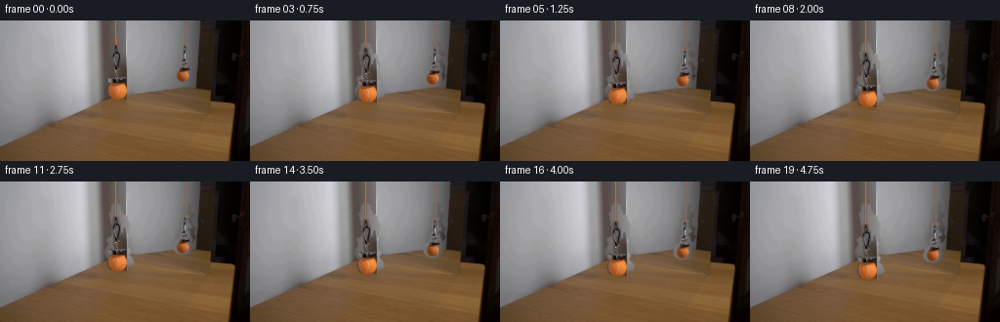
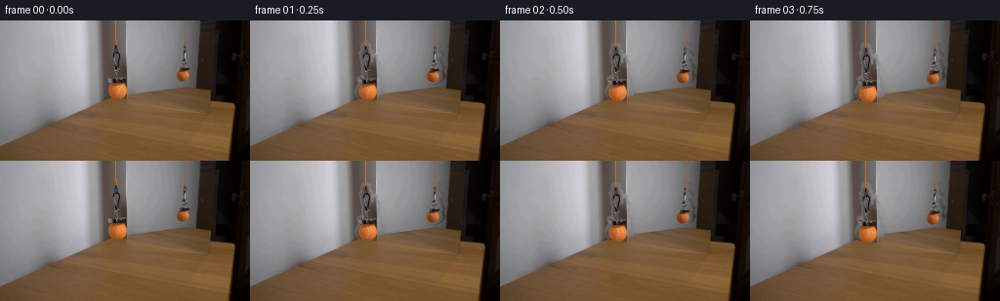

CODING AGENTS AS PIXEL WORLD MODELS
traex/GPT-5.6-Sol · 0115
点击播放 · 原生 RGB 像素
逐轮保存的候选
回放视频、检查图与代码变化。
每份候选均可单独播放。实际图片检查记录在下方工具轨迹中。
候选 01播放与检查图
点击播放 · 原生 RGB 像素


展开代码变化
--- 上一保存版本
+++ 本次保存版本
@@ -0,0 +1,164 @@
+"""Generate the requested locked-off scientific-demonstration video.
+
+The continuation is made by cleanly removing the two views of the hanging
+assembly from the supplied plate, then translating the real assembly and its
+mirror image together while paying out the visible orange cord. Everything
+else is retained directly from the supplied first frame.
+"""
+from pathlib import Path
+
+import cv2
+import numpy as np
+from PIL import Image
+
+import artifact_io
+
+ROOT = Path(__file__).resolve().parent
+H, W = 144, 256
+
+
+def ellipse(mask, center, axes):
+ cv2.ellipse(mask, center, axes, 0, 0, 360, 255, -1, cv2.LINE_AA)
+
+
+def build_masks(im):
+ """Masks following the actual, slightly irregular silhouettes in frame 0."""
+ grayish = cv2.medianBlur(im, 15)
+ detail = np.max(cv2.absdiff(im, grayish), axis=2)
+
+ main_env = np.zeros((H, W), np.uint8)
+ # Narrow envelope around magnet, knot and the dark short hanger.
+ main_poly = np.array([
+ [115, 24], [121, 24], [122, 30], [128, 33], [128, 40],
+ [132, 45], [130, 53], [133, 60], [129, 67], [115, 67],
+ [111, 60], [113, 53], [109, 48], [113, 42], [112, 35], [115, 31]
+ ], np.int32)
+ cv2.fillPoly(main_env, [main_poly], 255)
+ # Local contrast retains the hardware without carrying a large piece of mirror.
+ main = np.where((main_env > 0) & (detail > 8), 255, 0).astype(np.uint8)
+ main = cv2.morphologyEx(main, cv2.MORPH_CLOSE, np.ones((3, 3), np.uint8))
+ main = cv2.dilate(main, np.ones((3, 3), np.uint8), iterations=1)
+ main &= main_env
+ # The ball is a complete object, including its softly lit edge.
+ ellipse(main, (123, 72), (13, 10))
+ # Coupling between magnet and ball.
+ cv2.line(main, (120, 55), (122, 64), 255, 5, cv2.LINE_AA)
+
+ refl_env = np.zeros((H, W), np.uint8)
+ refl_poly = np.array([
+ [187, 23], [193, 23], [193, 30], [196, 34], [194, 42],
+ [197, 48], [193, 54], [181, 55], [179, 50], [183, 44],
+ [182, 38], [185, 32]
+ ], np.int32)
+ cv2.fillPoly(refl_env, [refl_poly], 255)
+ refl = np.where((refl_env > 0) & (detail > 6), 255, 0).astype(np.uint8)
+ refl = cv2.morphologyEx(refl, cv2.MORPH_CLOSE, np.ones((3, 3), np.uint8))
+ refl = cv2.dilate(refl, np.ones((3, 3), np.uint8), iterations=1)
+ refl &= refl_env
+ ellipse(refl, (187, 56), (9, 7))
+ cv2.line(refl, (189, 43), (188, 51), 255, 4, cv2.LINE_AA)
+
+ # Remove antialias values here. Feathering is performed once, explicitly.
+ main = np.where(main > 32, 255, 0).astype(np.uint8)
+ refl = np.where(refl > 32, 255, 0).astype(np.uint8)
+ return main, refl
+
+
+def clean_plate(im, masks):
+ """Reconstruct the unobscured mirror/table using local horizontal context."""
+ combined = cv2.bitwise_or(masks[0], masks[1])
+ hole = cv2.dilate(combined, cv2.getStructuringElement(cv2.MORPH_ELLIPSE, (7, 7)))
+ # Navier-Stokes interpolation is only a fallback beneath a row-consistent fill.
+ plate = cv2.inpaint(im, hole, 5, cv2.INPAINT_NS)
+
+ # Both objects lie over broad, nearly planar regions. Row interpolation keeps
+ # the diagonal lighting and tabletop boundary coherent behind each removed ball.
+ regions = [(masks[0], 106, 140), (masks[1], 176, 200)]
+ for objmask, xl, xr in regions:
+ expanded = cv2.dilate(objmask, cv2.getStructuringElement(cv2.MORPH_ELLIPSE, (5, 5)))
+ replacement = plate.copy().astype(np.float32)
+ for y in range(H):
+ xs = np.flatnonzero(expanded[y])
+ if not len(xs):
+ continue
+ left = im[y, max(0, xl-3):xl+1].astype(np.float32).mean(axis=0)
+ right = im[y, xr:min(W, xr+4)].astype(np.float32).mean(axis=0)
+ den = max(1, xr-xl)
+ for x in xs:
+ t = np.clip((x-xl)/den, 0.0, 1.0)
+ replacement[y, x] = left*(1-t) + right*t
+ # Soft boundary eliminates any evidence of the source location.
+ a = cv2.GaussianBlur((expanded.astype(np.float32)/255.0), (0, 0), 1.15)[..., None]
+ plate = np.clip(plate.astype(np.float32)*(1-a) + replacement*a, 0, 255).astype(np.uint8)
+ return plate
+
+
+def translate_layer(im, mask, dx, dy):
+ matrix = np.float32([[1, 0, dx], [0, 1, dy]])
+ rgb = cv2.warpAffine(im, matrix, (W, H), flags=cv2.INTER_LANCZOS4,
+ borderMode=cv2.BORDER_REFLECT_101)
+ soft = cv2.GaussianBlur(mask.astype(np.float32)/255.0, (0, 0), 0.62)
+ alpha = cv2.warpAffine(soft, matrix, (W, H), flags=cv2.INTER_LINEAR,
+ borderMode=cv2.BORDER_CONSTANT, borderValue=0)
+ return rgb.astype(np.float32), np.clip(alpha[..., None], 0, 1)
+
+
+def cord_layer(original, x0, stop_y):
+ """Extend an existing cord downward with its own sampled color/texture."""
+ layer = np.zeros((H, W, 3), np.float32)
+ alpha = np.zeros((H, W), np.float32)
+ start = 18
+ # Rows 5..17 contain clean cord texture. Repeat it imperceptibly at 256x144.
+ for y in range(start, min(H, stop_y + 1)):
+ sy = 5 + ((y - start) % 13)
+ if x0 == 118:
+ # Actual cord is about two pixels wide, with a dim antialiased edge.
+ layer[y, x0-1:x0+2] = original[sy, x0-1:x0+2]
+ alpha[y, x0-1:x0+2] = (0.48, 1.0, 0.62)
+ else:
+ layer[y, x0-1:x0+2] = original[sy, x0-1:x0+2]
+ alpha[y, x0-1:x0+2] = (0.34, 0.92, 0.42)
+ # A tiny vertical softening resembles the camera's native line spread.
+ alpha = cv2.GaussianBlur(alpha, (3, 3), 0.35)
+ return layer, alpha[..., None]
+
+
+def composite(dst, src, alpha):
+ return dst*(1.0-alpha) + src*alpha
+
+
+def main():
+ first = np.asarray(Image.open(ROOT / "first_frame.png").convert("RGB"), dtype=np.uint8)
+ if first.shape != (H, W, 3):
+ raise ValueError(f"Unexpected first-frame shape: {first.shape}")
+
+ main_mask, refl_mask = build_masks(first)
+ plate = clean_plate(first, (main_mask, refl_mask)).astype(np.float32)
+ frames = [first.copy()]
+
+ # One image pixel per frame gives a calm, constant 4 pixels/second lowering.
+ for index in range(1, 20):
+ displacement = index
+ frame = plate.copy()
+
+ # Pay out both views of the orange cord before placing the assemblies.
+ c1, a1 = cord_layer(first, 118, 25 + displacement)
+ frame = composite(frame, c1, a1)
+ c2, a2 = cord_layer(first, 190, 24 + displacement)
+ frame = composite(frame, c2, a2)
+
+ body, alpha = translate_layer(first, main_mask, 0, displacement)
+ frame = composite(frame, body, alpha)
+ mirror_body, mirror_alpha = translate_layer(first, refl_mask, 0, displacement)
+ frame = composite(frame, mirror_body, mirror_alpha)
+
+ frames.append(np.clip(np.rint(frame), 0, 255).astype(np.uint8))
+
+ frames = np.stack(frames, axis=0)
+ # Contract-critical identity: do not allow processing to touch frame zero.
+ frames[0] = first
+ artifact_io.save(frames, ROOT)
+
+
+if __name__ == "__main__":
+ main()
可观测工具轨迹
实际执行的命令与返回图片。
命令 1exit 0
/bin/bash -lc "cat prompt.txt && printf '\\n---RULES---\\n' && cat GENERATION_RULES.md"
命令 2exit 127
/bin/bash -lc "find . -maxdepth 2 -type f -printf '%p\\n' | sort && printf '\\n--- image metadata ---\\n' && file first_frame.png"
命令 3exit 0
/bin/bash -lc "python - <<'PY'
from PIL import Image
import numpy as np
im=np.array(Image.open('first_frame.png').convert('RGB'))
print(im.shape, im.dtype, im.min(), im.max())
print('mean',im.mean((0,1)),'std',im.std((0,1)))
# rows/cols mean and variance saliency
for y in range(0,144,12): print('row',y, np.round(im[y].mean(0),1), 'sd',np.round(im[y].std(0),1))
# corners
for y,x in [(0,0),(0,255),(143,0),(143,255),(72,128)]: print(y,x,im[y,x])
PY
python - <<'PY'
try:
import cv2; print('cv2',cv2.__version__)
except Exception as e: print(e)
try:
import scipy; print('scipy',scipy.__version__)
except Exception as e: print(e)
PY"命令 4exit 0
/bin/bash -lc "cat artifact_io.py && python - <<'PY'
import cv2,numpy as np
im=cv2.imread('first_frame.png'); hsv=cv2.cvtColor(im,cv2.COLOR_BGR2HSV)
# thresholds common tennis yell/green, orange cord
for name,lo,hi in [
('yellow',(20,50,60),(50,255,255)),('green',(35,30,40),(90,255,255)),('orange',(5,80,80),(25,255,255)),('bright',(0,0,180),(179,255,255)),('sat',(0,100,0),(179,255,255))]:
m=cv2.inRange(hsv,np.array(lo),np.array(hi)); n,lab,st,cen=cv2.connectedComponentsWithStats(m)
print('\\n',name,'pixels',int((m>0).sum()))
for i in np.argsort(st[1:,4])[::-1][:12]+1:
if st[i,4]>=2: print(st[i].tolist(),np.round(cen[i],1).tolist(), 'hsvmean',np.round(hsv[lab==i].mean(0),1).tolist())
# Kmeans colors
z=im[:,:,::-1].reshape(-1,3).astype(np.float32)
criteria=(cv2.TERM_CRITERIA_EPS+cv2.TERM_CRITERIA_MAX_ITER,30,.2)
_,labels,cent=cv2.kmeans(z,12,None,criteria,5,cv2.KMEANS_PP_CENTERS)
for i,c in sorted(enumerate(cent),key=lambda x:(labels==x[0]).sum(), reverse=True): print('cluster',i,'n',int((labels==i).sum()),'rgb',np.round(c).astype(int))
PY"命令 5exit 0
/bin/bash -lc "python - <<'PY'
import cv2,numpy as np
im=cv2.imread('first_frame.png')[:,:,::-1]
# print pixel grid hue symbols and brightness around object areas
hsv=cv2.cvtColor(im[:,:,::-1],cv2.COLOR_BGR2HSV)
for box in [(105,0,135,90),(172,0,205,75),(0,0,256,144)]:
x0,y0,x1,y1=box
print('\\nBOX',box)
sy=2 if x1-x0<100 else 6; sx=2 if x1-x0<100 else 6
for y in range(y0,y1,sy):
s=''
for x in range(x0,x1,sx):
H,S,V=hsv[y:min(y+sy,y1),x:min(x+sx,x1)].reshape(-1,3).mean(0)
if V<25:c='K'
elif S<20 and V>180:c='W'
elif S<25:c='g' #gray
elif H<8 or H>170:c='R'
elif H<25 and S>100 and V>120:c='O'
elif H<25:c='b' # brown
elif H<50:c='Y'
elif H<90:c='G'
elif H<140:c='B'
else:c='P'
s+=c
print(f'{y:03}',s)
PY"命令 6exit 0
/bin/bash -lc "python - <<'PY'
from PIL import Image
import numpy as np, cv2
im=np.array(Image.open('first_frame.png').convert('RGB'))
for box in [(108,0,132,90),(176,0,200,72)]:
x0,y0,x1,y1=box
print('\\nRGB blocks',box)
for y in range(y0,y1,2):
vals=[]
for x in range(x0,x1,2):
a=im[y:y+2,x:x+2].mean((0,1)).astype(int)
# compress as R/G/B hex
vals.append('%02x%02x%02x'%tuple(a))
print(f'{y:03}', ' '.join(vals))
PY"命令 7exit 0
/bin/bash -lc "python - <<'PY'
import cv2,numpy as np
im=cv2.imread('first_frame.png')[:,:,::-1]
g=np.dot(im,[.2126,.7152,.0722])
chars=' .:-=+*#%@'
for sy,sx in [(3,3),(4,4)]:
print('\\n',sy,sx)
for y in range(0,144,sy):
s=''
for x in range(0,256,sx):
v=g[y:y+sy,x:x+sx].mean(); s+=chars[min(9,int(v/256*10))]
print(s)
PY"命令 8exit 0
/bin/bash -lc "python - <<'PY'
from PIL import Image
import numpy as np
im=np.array(Image.open('first_frame.png').convert('RGB'))
for name,box in [('c1',(117,0,120,24)),('c1low',(117,18,120,64)),('c2',(189,0,191,25)),('c2low',(188,15,191,52))]:
x0,y0,x1,y1=box;a=im[y0:y1,x0:x1]; print(name,a.reshape(-1,3).mean(0),np.median(a.reshape(-1,3),0),a.reshape(-1,3).min(0),a.reshape(-1,3).max(0))
PY"命令 9exit 0
/bin/bash -lc "python - <<'PY'
import cv2,numpy as np
im=cv2.imread('first_frame.png'); hsv=cv2.cvtColor(im,cv2.COLOR_BGR2HSV)
for name,(x0,y0,x1,y1) in {'m':(105,55,145,90),'r':(175,45,202,67)}.items():
print(name)
for y in range(y0,y1):
s=''
for x in range(x0,x1):
h,sa,v=hsv[y,x]
if sa>140 and 5<h<25 and v>120: c='O'
elif sa>70 and 5<h<25 and v>70:c='o'
elif v<40:c='K'
elif sa<30:c='.'
else:c=' '
s+=c
print('%03d'%y,s)
PY"命令 10exit 0
/bin/bash -lc "cat > generate.py <<'PY'
\"\"\"Generate the requested locked-off scientific-demonstration video.
The continuation is made by cleanly removing the two views of the hanging
assembly from the supplied plate, then translating the real assembly and its
mirror image together while paying out the visible orange cord. Everything
else is retained directly from the supplied first frame.
\"\"\"
from pathlib import Path
import cv2
import numpy as np
from PIL import Image
import artifact_io
ROOT = Path(__file__).resolve().parent
H, W = 144, 256
def ellipse(mask, center, axes):
cv2.ellipse(mask, center, axes, 0, 0, 360, 255, -1, cv2.LINE_AA)
def build_masks(im):
\"\"\"Masks following the actual, slightly irregular silhouettes in frame 0.\"\"\"
grayish = cv2.medianBlur(im, 15)
detail = np.max(cv2.absdiff(im, grayish), axis=2)
main_env = np.zeros((H, W), np.uint8)
# Narrow envelope around magnet, knot and the dark short hanger.
main_poly = np.array([
[115, 24], [121, 24], [122, 30], [128, 33], [128, 40],
[132, 45], [130, 53], [133, 60], [129, 67], [115, 67],
[111, 60], [113, 53], [109, 48], [113, 42], [112, 35], [115, 31]
], np.int32)
cv2.fillPoly(main_env, [main_poly], 255)
# Local contrast retains the hardware without carrying a large piece of mirror.
main = np.where((main_env > 0) & (detail > 8), 255, 0).astype(np.uint8)
main = cv2.morphologyEx(main, cv2.MORPH_CLOSE, np.ones((3, 3), np.uint8))
main = cv2.dilate(main, np.ones((3, 3), np.uint8), iterations=1)
main &= main_env
# The ball is a complete object, including its softly lit edge.
ellipse(main, (123, 72), (13, 10))
# Coupling between magnet and ball.
cv2.line(main, (120, 55), (122, 64), 255, 5, cv2.LINE_AA)
refl_env = np.zeros((H, W), np.uint8)
refl_poly = np.array([
[187, 23], [193, 23], [193, 30], [196, 34], [194, 42],
[197, 48], [193, 54], [181, 55], [179, 50], [183, 44],
[182, 38], [185, 32]
], np.int32)
cv2.fillPoly(refl_env, [refl_poly], 255)
refl = np.where((refl_env > 0) & (detail > 6), 255, 0).astype(np.uint8)
refl = cv2.morphologyEx(refl, cv2.MORPH_CLOSE, np.ones((3, 3), np.uint8))
refl = cv2.dilate(refl, np.ones((3, 3), np.uint8), iterations=1)
refl &= refl_env
ellipse(refl, (187, 56), (9, 7))
cv2.line(refl, (189, 43), (188, 51), 255, 4, cv2.LINE_AA)
# Remove antialias values here. Feathering is performed once, explicitly.
main = np.where(main > 32, 255, 0).astype(np.uint8)
refl = np.where(refl > 32, 255, 0).astype(np.uint8)
return main, refl
def clean_plate(im, masks):
\"\"\"Reconstruct the unobscured mirror/table using local horizontal context.\"\"\"
combined = cv2.bitwise_or(masks[0], masks[1])
hole = cv2.dilate(combined, cv2.getStructuringElement(cv2.MORPH_ELLIPSE, (7, 7)))
# Navier-Stokes interpolation is only a fallback beneath a row-consistent fill.
plate = cv2.inpaint(im, hole, 5, cv2.INPAINT_NS)
# Both objects lie over broad, nearly planar regions. Row interpolation keeps
# the diagonal lighting and tabletop boundary coherent behind each removed ball.
regions = [(masks[0], 106, 140), (masks[1], 176, 200)]
for objmask, xl, xr in regions:
expanded = cv2.dilate(objmask, cv2.getStructuringElement(cv2.MORPH_ELLIPSE, (5, 5)))
replacement = plate.copy().astype(np.float32)
for y in range(H):
xs = np.flatnonzero(expanded[y])
if not len(xs):
continue
left = im[y, max(0, xl-3):xl+1].astype(np.float32).mean(axis=0)
right = im[y, xr:min(W, xr+4)].astype(np.float32).mean(axis=0)
den = max(1, xr-xl)
for x in xs:
t = np.clip((x-xl)/den, 0.0, 1.0)
replacement[y, x] = left*(1-t) + right*t
# Soft boundary eliminates any evidence of the source location.
a = cv2.GaussianBlur((expanded.astype(np.float32)/255.0), (0, 0), 1.15)[..., None]
plate = np.clip(plate.astype(np.float32)*(1-a) + replacement*a, 0, 255).astype(np.uint8)
return plate
def translate_layer(im, mask, dx, dy):
matrix = np.float32([[1, 0, dx], [0, 1, dy]])
rgb = cv2.warpAffine(im, matrix, (W, H), flags=cv2.INTER_LANCZOS4,
borderMode=cv2.BORDER_REFLECT_101)
soft = cv2.GaussianBlur(mask.astype(np.float32)/255.0, (0, 0), 0.62)
alpha = cv2.warpAffine(soft, matrix, (W, H), flags=cv2.INTER_LINEAR,
borderMode=cv2.BORDER_CONSTANT, borderValue=0)
return rgb.astype(np.float32), np.clip(alpha[..., None], 0, 1)
def cord_layer(original, x0, stop_y):
\"\"\"Extend an existing cord downward with its own sampled color/texture.\"\"\"
layer = np.zeros((H, W, 3), np.float32)
alpha = np.zeros((H, W), np.float32)
start = 18
# Rows 5..17 contain clean cord texture. Repeat it imperceptibly at 256x144.
for y in range(start, min(H, stop_y + 1)):
sy = 5 + ((y - start) % 13)
if x0 == 118:
# Actual cord is about two pixels wide, with a dim antialiased edge.
layer[y, x0-1:x0+2] = original[sy, x0-1:x0+2]
alpha[y, x0-1:x0+2] = (0.48, 1.0, 0.62)
else:
layer[y, x0-1:x0+2] = original[sy, x0-1:x0+2]
alpha[y, x0-1:x0+2] = (0.34, 0.92, 0.42)
# A tiny vertical softening resembles the camera's native line spread.
alpha = cv2.GaussianBlur(alpha, (3, 3), 0.35)
return layer, alpha[..., None]
def composite(dst, src, alpha):
return dst*(1.0-alpha) + src*alpha
def main():
first = np.asarray(Image.open(ROOT / \"first_frame.png\").convert(\"RGB\"), dtype=np.uint8)
if first.shape "'!= (H, W, 3):
raise ValueError(f"Unexpected first-frame shape: {first.shape}")
main_mask, refl_mask = build_masks(first)
plate = clean_plate(first, (main_mask, refl_mask)).astype(np.float32)
frames = [first.copy()]
# One image pixel per frame gives a calm, constant 4 pixels/second lowering.
for index in range(1, 20):
displacement = index
frame = plate.copy()
# Pay out both views of the orange cord before placing the assemblies.
c1, a1 = cord_layer(first, 118, 25 + displacement)
frame = composite(frame, c1, a1)
c2, a2 = cord_layer(first, 190, 24 + displacement)
frame = composite(frame, c2, a2)
body, alpha = translate_layer(first, main_mask, 0, displacement)
frame = composite(frame, body, alpha)
mirror_body, mirror_alpha = translate_layer(first, refl_mask, 0, displacement)
frame = composite(frame, mirror_body, mirror_alpha)
frames.append(np.clip(np.rint(frame), 0, 255).astype(np.uint8))
frames = np.stack(frames, axis=0)
# Contract-critical identity: do not allow processing to touch frame zero.
frames[0] = first
artifact_io.save(frames, ROOT)
if __name__ == "__main__":
main()
PY
python generate.py
python - <<'"'PY'
from PIL import Image
import numpy as np
z=np.load('pixels.npz')['pixels']
f=np.array(Image.open('first_frame.png').convert('RGB'))
p=((z[:,:,0]>>16)&255).astype('uint8')
q=((z[:,:,0]>>8)&255).astype('uint8')
r=(z[:,:,0]&255).astype('uint8')
rec=np.stack([p,q,r],2)
print('pixels',z.shape,z.dtype,'frame0_equal',np.array_equal(rec,f))
for i in [1,2,5,10,19]:
a=np.array(Image.open(f'frames/{i:02d}.png'))
d=np.abs(a.astype(int)-f.astype(int)); print(i,'changed',np.any(d,2).sum(),'mae',d.mean(),'bbox',cv2.boundingRect((np.any(d,2)).astype('uint8')) if False else '')
PY"命令 11exit 0
/bin/bash -lc "python - <<'PY'
import cv2,numpy as np
from PIL import Image
f=np.array(Image.open('first_frame.png'))
for i in [1,2,10,19]:
a=np.array(Image.open(f'frames/{i:02d}.png'))
d=np.max(np.abs(a.astype(np.int16)-f.astype(np.int16)),2)
for th in [0,3,10,30]:
m=(d>th).astype('uint8'); n,_,st,ce=cv2.connectedComponentsWithStats(m)
comps=sorted(st[1:].tolist(),key=lambda z:z[4],reverse=True)[:4]
print(i,th,int(m.sum()),comps)
# Detect orange bright components by fixed RGB condition all frames, print bbox around expected objects
for i in [0,1,5,10,19]:
a=np.array(Image.open(f'frames/{i:02d}.png')); hsv=cv2.cvtColor(a,cv2.COLOR_RGB2HSV)
m=cv2.inRange(hsv,np.array((5,130,110)),np.array((25,255,255)))
n,l,st,ce=cv2.connectedComponentsWithStats(m)
c=[]
for j in range(1,n):
x,y,w,h,A=st[j];
if A>5 and x>100: c.append((x,y,w,h,A,tuple(np.round(ce[j],1))))
print('orange',i,sorted(c,key=lambda z:z[4],reverse=True)[:5])
PY"保存候选 1 份；完成命令 11 次；可验证图片返回 0 张。原始 API 响应与完整日志保留在本地。